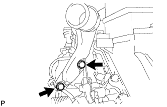

CYLINDER HEAD GASKET > REMOVAL |
| 1. DISCONNECT CABLE FROM NEGATIVE BATTERY TERMINAL |
Disconnect the cables from the negative (-) main battery and sub-battery terminals.
| 2. REMOVE ENGINE ASSEMBLY |
Remove the engine assembly from the vehicle (Click here).
| 3. CHECK INJECTOR COMPENSATION CODE |
 |
After replacing fuel injector(s) with new one(s), input compensation code(s) of fuel injector(s) into ECM as follows:
Input the compensation code(s), which is/are imprinted on the head portion(s) of the new fuel injector(s), into the intelligent tester.
Input the new compensation code(s) into the ECM using the tester.
Turn the tester off and turn the engine switch off.
Wait for at least 30 seconds.
Turn the engine switch on (IG) and turn the tester on.
Clear DTC P1601 stored in the ECM using the tester (Click here).
Register compensation code.

Connect the intelligent tester to the DLC3.
Turn the engine switch on (IG).
Turn the tester on.
 |
Enter the following menus: Powertrain / Engine / Utility / Injector Compensation.
Press Next.
 |
Press Next again to proceed.
 |
Select "Set Compensation Code".
Press Next.
 |
Select the number of the cylinder corresponding to the fuel injector compensation code that you want to read.
Press Next.
 |
Register compensation code.
 |
 |
Check that the compensation code displayed on the screen is correct by comparing it with the 30 digit alphanumeric value on the head portion of the fuel injector.
Press Next to register the compensation code in the ECM.
 |
If you want to continue with other compensation code registrations, press Next. To finish the registration, press Cancel.
Turn the engine switch off and then turn the tester off.
Wait for at least 30 seconds.
Turn the engine switch on (IG) and then turn the tester on.
Clear DTC P1601 stored in the ECM using the tester (Click here).
| 4. REMOVE NO. 1 INTAKE AIR CONNECTOR PIPE |
 |
Disconnect the 4 connectors.
Using a clip remover, detach the 5 wire harness clamps.
 |
Loosen the hose clamp, and remove the bolt and No. 1 intake air connector pipe.
| 5. REMOVE GENERATOR ASSEMBLY |
 |
Remove the nut and bolt, and disconnect the generator positive (+) cable.
 |
Remove the 3 bolts, 2 nuts and generator.
| 6. REMOVE NO. 1 ENGINE OIL LEVEL DIPSTICK GUIDE |
 |
Remove the 2 bolts and No. 1 engine oil level dipstick guide.
| 7. DISCONNECT NO. 2 VENTILATION HOSE |
 |
| 8. DISCONNECT NO. 2 TURBO WATER HOSE |
 |
| 9. DISCONNECT BREATHER PLUG RH |
 |
| 10. REMOVE NO. 1 EXHAUST MANIFOLD HEAT INSULATOR |
 |
Remove the 3 bolts and No. 1 exhaust manifold heat insulator.
| 11. DISCONNECT NO. 1 OUTLET TURBO OIL HOSE |
 |
| 12. REMOVE NO. 1 TURBO WATER PIPE SUB-ASSEMBLY |
 |
Disconnect the water hose.
Remove the 3 bolts, 2 nuts, No. 1 turbo water pipe and gasket.
| 13. REMOVE NO. 1 TURBOCHARGER STAY |
 |
Remove the 2 bolts and No. 1 turbocharger stay.
| 14. REMOVE NO. 1 VENTILATION TUBE SUB-ASSEMBLY |
 |
Disconnect the vacuum hose.
Remove the union bolt, bolt, No. 1 ventilation tube and gasket.
| 15. REMOVE NO. 1 TURBOCHARGER SUB-ASSEMBLY WITH EXHAUST MANIFOLD RH |
 |
Remove the union bolt and gasket, and disconnect the No. 1 inlet turbo oil pipe from the cylinder block.
 |
Remove the 10 nuts, 10 collars, and No. 1 turbocharger with exhaust manifold RH.
 |
Remove the gasket from the cylinder head RH.
| 16. DISCONNECT NO. 3 VENTILATION HOSE |
 |
| 17. DISCONNECT BREATHER PLUG LH |
 |
| 18. DISCONNECT NO. 2 TURBO WATER HOSE |
 |
| 19. REMOVE NO. 2 EXHAUST MANIFOLD HEAT INSULATOR |
 |
Remove the 3 bolts and No. 2 exhaust manifold heat insulator.
| 20. REMOVE NO. 3 TURBO WATER PIPE SUB-ASSEMBLY |
 |
Remove the 2 bolts, union bolt, No. 3 turbo water pipe and gasket.
| 21. REMOVE FRONT WATER BY-PASS JOINT |
 |
Remove the front water by-pass joint and gasket.
| 22. REMOVE NO. 2 TURBO WATER PIPE SUB-ASSEMBLY |
 |
Disconnect the water hose.
Remove the union bolt, bolt, No. 2 turbo water pipe and gasket.
| 23. DISCONNECT NO. 2 OUTLET TURBO OIL HOSE |
 |
| 24. REMOVE NO. 2 TURBOCHARGER STAY |
 |
Remove the 2 bolts and No. 2 turbocharger stay.
| 25. REMOVE NO. 2 VENTILATION TUBE SUB-ASSEMBLY |
 |
Disconnect the No. 2 vacuum transmitting hose.
Remove the union bolt, bolt, No. 2 ventilation tube and gasket.
| 26. REMOVE NO. 2 TURBOCHARGER SUB-ASSEMBLY WITH EXHAUST MANIFOLD LH |
 |
Remove the union bolt and gasket, and disconnect the No. 2 inlet turbo oil pipe.
 |
Disconnect the 2 connectors from the turbocharger.
 |
Remove the 10 nuts, 10 collars, and No. 2 turbocharger with exhaust manifold LH.
 |
Remove the gasket from the cylinder head LH.
| 27. REMOVE NO. 1 INTAKE AIR CONNECTOR BRACKET |
 |
Remove the 2 bolts and No. 1 intake air connector bracket.
| 28. REMOVE AIR TUBE SUPPORT |
 |
Remove the 2 bolts and air tube support.
| 29. REMOVE NO. 1 WATER BY-PASS PIPE SUB-ASSEMBLY |
 |
Remove the union bolt, bolt, No. 1 water by-pass pipe and gasket.
| 30. REMOVE NO. 4 VACUUM TRANSMITTING PIPE SUB-ASSEMBLY |
 |
Disconnect the vacuum hose.
Remove the 2 bolts and No. 4 vacuum transmitting pipe.
| 31. REMOVE ENGINE MOUNTING BRACKET RH |
 |
Remove the 4 bolts and engine mounting bracket RH.
| 32. REMOVE NO. 1 CYLINDER BLOCK INSULATOR |
 |
| 33. REMOVE NO. 2 INTAKE AIR CONNECTOR BRACKET |
 |
Detach the 2 wire harness clamps.
 |
Remove the bolt and No. 2 intake air connector bracket.
| 34. REMOVE TURBOCHARGER WIRE |
 |
Detach the 3 wire harness clamps.
Remove the 2 bolts and turbocharger wire.
| 35. REMOVE NO. 3 VACUUM TRANSMITTING PIPE SUB-ASSEMBLY |
 |
Disconnect the vacuum hose.
Remove the 2 bolts and No. 3 vacuum transmitting pipe.
| 36. REMOVE NO. 2 WATER BY-PASS PIPE SUB-ASSEMBLY |
 |
Remove the union bolt, 2 bolts, No. 2 water by-pass pipe and gasket.
| 37. REMOVE ENGINE MOUNTING BRACKET LH |
 |
Remove the 4 bolts and engine mounting bracket LH.
| 38. REMOVE NO. 2 CYLINDER BLOCK INSULATOR |
 |
| 39. REMOVE COMPRESSOR BRACKET |
 |
Remove the bolt and compressor bracket.
| 40. REMOVE STIFFENER INSULATOR RH |
 |
Remove the 2 bolts and stiffener insulator RH.
| 41. DISCONNECT NO. 1 OIL COOLER HOSE |
 |
| 42. DISCONNECT NO. 2 OIL COOLER HOSE |
| 43. REMOVE CRANKSHAFT PULLEY |
 |
Install the 2 bolts to the bolt holes of the crankshaft rear side.
Using a bar, turn the crankshaft until the crankshaft pulley service hole is a little to the left of bottom dead center.
Install a 14 mm x 1.5 pitch service bolt with a length of 70 mm or more to the crankshaft pulley service hole, and hold the crankshaft using the timing chain cover protrusion.
Remove the 3 bolts and crankshaft pulley.
| 44. REMOVE TIMING GEAR COVER SPACER |
 |
Remove the 2 bolts and timing gear cover spacer.
| 45. REMOVE OIL FILTER ELEMENT |
 |
Remove the oil filter drain plug.
 |
Connect a hose with an inside diameter of 15 mm (0.591 in.) to the pipe.
Remove the O-ring from the oil filter drain plug and install it to the drain pipe.
 |
Install the oil filter drain pipe to the oil filter cap and drain the engine oil.
Remove the oil filter drain pipe.
Apply a light coat of engine oil to a new O-ring, and install it to the oil filter drain plug.
|
Install the oil filter drain plug to the oil filter cap.
 |
Using SST, remove the oil filter cap.
 |
Remove the oil filter element and O-ring from the oil filter cap.
| 46. REMOVE OIL FILTER BRACKET SUB-ASSEMBLY |
 |
Disconnect the 2 wire harness clamps.
 |
Remove the 3 bolts, 2 nuts and oil filter bracket.
 |
Remove the 2 O-rings.
| 47. REMOVE ENGINE OIL LEVEL SENSOR |
 |
Remove the 4 bolts and engine oil level sensor.
Remove the gasket.
| 48. REMOVE NO. 2 OIL PAN SUB-ASSEMBLY |
 |
Remove the 10 bolts and 2 nuts.
 |
Insert the blade of an oil pan seal cutter between the oil pans. Cut through the applied sealer and remove the No. 2 oil pan.
| 49. REMOVE OIL STRAINER SUB-ASSEMBLY |
 |
Remove the 2 bolts and oil strainer.
Remove the O-ring from the oil strainer.
| 50. REMOVE NO. 1 OIL PAN SUB-ASSEMBLY |
 |
Remove the 20 bolts, 2 nuts and oil reflector plate.
 |
Remove the No. 1 oil pan by prying between the No. 1 oil pan and cylinder block with a screwdriver.
 |
Remove the 3 O-rings.
 |
Remove the cylinder block oil hole gasket.
| 51. REMOVE CAMSHAFT POSITION SENSOR |
 |
Remove the bolt and sensor.
| 52. REMOVE CRANKSHAFT POSITION SENSOR |
 |
Remove the bolt and sensor.
| 53. REMOVE VISCOUS HEATER ASSEMBLY WITH MAGNET CLUTCH (w/ Viscous Heater) |
 |
Disconnect the connector and detach the clamp.
Using pliers, grip the claws of the clips and slide the 2 clips.
Disconnect the 2 heater hoses.
Remove the 2 bolts and heater assembly.
| 54. REMOVE NO. 1 IDLER PULLEY BRACKET (w/ Viscous Heater) |
 |
Remove the bolt and No. 1 idler pulley bracket.
| 55. REMOVE WATER INLET |
 |
Disconnect the No. 2 oil cooler hose from the water pump and clamp.
 |
Remove the 4 bolts and water inlet.
| 56. REMOVE THERMOSTAT |
Remove the thermostat.
Remove the gasket from the thermostat.
| 57. REMOVE TIMING GEAR COVER INSULATOR |
 |
w/o Viscous Heater:
Remove the 2 bolts and timing gear cover insulator.
 |
w/ Viscous Heater:
Remove the timing gear cover insulator.
| 58. REMOVE FAN BRACKET SUB-ASSEMBLY |
 |
Remove the 4 bolts and fan bracket.
| 59. REMOVE NO. 2 IDLER PULLEY (w/ Viscous Heater) |
 |
Remove the bolt, cover, No. 2 idler pulley and collar.
| 60. REMOVE NO. 2 IDLER PULLEY BRACKET (w/ Viscous Heater) |
 |
Remove the 3 bolts and idler pulley bracket.
| 61. REMOVE V-RIBBED BELT TENSIONER ASSEMBLY |
 |
Remove the 3 bolts and V-ribbed belt tensioner bracket.
 |
Remove the bolt and No. 1 idler pulley.
 |
Remove the 5 bolts and V-ribbed belt tensioner.
| 62. DISCONNECT INLET WATER HOSE |
 |
| 63. REMOVE STARTER ASSEMBLY |
 |
Disconnect the connector and detach the wire harness clamp.
Remove the nut and No. 2 engine wire.
 |
Disconnect the 2 hoses.
 |
Remove the 2 bolts and starter.
| 64. REMOVE STARTER HOSE BRACKET |
 |
Remove the 2 bolts and starter hose bracket.
| 65. REMOVE CLUTCH FLEXIBLE HOSE BRACKET (for Manual Transmission) |
 |
Remove the 2 bolts and clutch flexible hose bracket.
| 66. REMOVE NO. 2 INTERCOOLER SUPPORT BRACKET |
 |
Remove the 2 bolts and No. 2 intercooler support bracket.
| 67. REMOVE WATER OUTLET |
 |
Disconnect the engine coolant temperature sensor connector.
Remove the 2 bolts, disconnect the water outlet from the No. 2 water hose joint, and remove the water outlet and gasket.
| 68. REMOVE WATER OUTLET PIPE |
 |
Remove the 4 bolts, water outlet pipe and 2 gaskets.
| 69. REMOVE NO. 1 GLOW PLUG CONNECTOR |
 |
Remove the 2 screw grommets and 2 nuts, and disconnect the 2 wire harnesses.
Remove the 8 screw grommets, 8 nuts and 2 glow plug connectors.
| 70. REMOVE GLOW PLUG ASSEMBLY |
 |
Using a 10 mm deep socket wrench, remove the 8 glow plugs.
| 71. REMOVE NO. 1 VACUUM SWITCHING VALVE ASSEMBLY (for Engine Mounting) |
 |
Disconnect the 2 vacuum hoses.
Remove the bolt and vacuum switching valve.
| 72. REMOVE NO. 1 VACUUM TRANSMITTING PIPE SUB-ASSEMBLY |
 |
Disconnect the 2 vacuum hoses.
Remove the 3 bolts and vacuum transmitting pipe.
| 73. REMOVE CYLINDER HEAD COVER SILENCER RH |
 |
Remove the 3 bolts and cylinder head cover silencer.
| 74. REMOVE CYLINDER HEAD COVER SILENCER LH |
 |
Remove the 3 bolts and cylinder head cover silencer.
| 75. REMOVE VACUUM PUMP ASSEMBLY |
 |
Remove the 3 bolts and vacuum pump.
Remove the 2 O-rings.
| 76. REMOVE NOZZLE HOLDER SEAL RH |
 |
Using a small screwdriver, remove the 4 holder seals by prying the portion between each holder seal and the cutout part of the cylinder head cover.
| 77. REMOVE CYLINDER HEAD COVER SUB-ASSEMBLY RH |
 |
Remove the 18 bolts, cylinder head cover and gasket.
| 78. REMOVE NOZZLE HOLDER GASKET RH |
 |
Using a small screwdriver and hammer, remove the 4 nozzle holder gaskets.
| 79. REMOVE OIL SEPARATOR ASSEMBLY |
 |
Remove the 3 bolts, oil separator and gasket.
| 80. REMOVE NOZZLE HOLDER SEAL LH |
 |
Using a small screwdriver, remove the 4 holder seals by prying the portion between each holder seal and the cutout part of the cylinder head cover.
| 81. REMOVE CYLINDER HEAD COVER SUB-ASSEMBLY LH |
 |
Remove the 17 bolts, cylinder head cover and gasket.
| 82. REMOVE NOZZLE HOLDER GASKET LH |
|
Using a small screwdriver and hammer, remove the 4 nozzle holder gaskets.
| 83. REMOVE FUEL INJECTOR RH |
 |
Remove the union bolt, 4 hollow screws, 5 gaskets and nozzle leakage pipe.
 |
Remove the 4 bolts, 4 washers, 4 nozzle holder clamps and 4 injectors.
Remove the O-ring from each injector.
Remove the 4 injection nozzle seats from the cylinder head.
| 84. REMOVE FUEL INJECTOR LH |
 |
Remove the union bolt, 4 hollow screws, 5 gaskets and No. 2 nozzle leakage pipe.
 |
Remove the 4 bolts, 4 washers, 4 nozzle holder clamps and 4 injectors.
Remove the O-ring from each injector.
Remove the 4 injection nozzle seats from the cylinder head.
| 85. REMOVE WATER PUMP ASSEMBLY |
 |
Remove the 9 bolts, 2 nuts, water pump and gasket.
| 86. REMOVE TIMING CHAIN COVER SUB-ASSEMBLY |
 |
Remove the 4 nuts and 16 bolts.
Using a screwdriver, remove the timing chain cover by prying between the timing chain cover and cylinder head or cylinder block.
 |
 |
Remove the O-ring from the timing gear case.
| 87. REMOVE FRONT CRANKSHAFT OIL SEAL |
 |
Place the timing chain cover on wooden blocks.
Using a screwdriver and wooden block, pry out the oil seal.
| 88. SET NO. 1 CYLINDER TO TDC/COMPRESSION |
Temporarily install the 2 crankshaft pulley set bolts to the crankshaft.
Turn the crankshaft clockwise to set the No. 1 cylinder to TDC.
With the crankshaft key 45° counterclockwise from the top position, check that the timing marks of the RH and LH camshaft timing gears are aligned. If not as specified, turn the crankshaft 1 revolution (360°) and align the timing marks as shown below.

Remove the 2 crankshaft pulley set bolts.
| 89. REMOVE NO. 1 CRANKSHAFT POSITION SENSOR PLATE |
 |
Using a T30 "TORX" wrench, remove the 2 screws and crankshaft position sensor plate.
| 90. REMOVE PUMP DRIVE SHAFT GEAR |
 |
Using SST, hold the pump drive shaft gear.
Remove the 4 bolts and pump drive shaft gear.
| 91. REMOVE NO. 1 CHAIN TENSIONER ASSEMBLY |
Push the tensioner slipper away from the tensioner, and move the stopper plate clockwise to release the lock as shown in A.
Push down the tensioner slipper and move the stopper plate counterclockwise to set the lock as shown in B.
Push the tensioner slipper away from the tensioner, and insert a hexagon wrench into the stopper plate hole as shown in C.

 |
Remove the 2 bolts and No. 1 chain tensioner.
| 92. REMOVE NO. 1 CHAIN TENSIONER SLIPPER |
 |
| 93. REMOVE NO. 1 CHAIN VIBRATION DAMPER |
 |
Remove the 2 bolts and No. 1 chain vibration damper.
| 94. REMOVE NO. 1 CAMSHAFT TIMING SPROCKET AND NO. 1 TIMING CHAIN |
 |
| 95. REMOVE NO. 2 CHAIN TENSIONER ASSEMBLY |
Push the tensioner slipper away from the tensioner, and move the stopper plate clockwise to release the lock as shown in A.
Push up the tensioner slipper and move the stopper plate counterclockwise to set the lock as shown in B.
Push the tensioner slipper away from the tensioner, and insert a hexagon wrench into the stopper plate hole as shown in C.

 |
Remove the 2 bolts and No. 2 chain tensioner.
| 96. REMOVE NO. 2 CHAIN TENSIONER SLIPPER |
 |
| 97. REMOVE NO. 2 CHAIN VIBRATION DAMPER |
 |
Remove the 2 bolts and No. 2 chain vibration damper.
| 98. REMOVE NO. 2 CAMSHAFT TIMING SPROCKET AND NO. 2 TIMING CHAIN |
 |
Using SST, hold the No. 2 camshaft timing sprocket.
Remove the 4 bolts, No. 2 camshaft timing sprocket and No. 2 timing chain.
| 99. REMOVE FUEL SUPPLY PUMP DRIVE GEAR NUT |
 |
Using SST, hold the idle gear.
Remove the nut.
| 100. REMOVE IDLE GEAR ASSEMBLY |
 |
Using a 8 mm x 1.25 pitch service bolt with a length of 15 mm or more, fix the idle gear in place.
 |
Remove the 2 bolts, idle gear thrust plate and idle gear.
| 101. REMOVE NO. 1 IDLE GEAR SHAFT |
 |
| 102. REMOVE FUEL SUPPLY PUMP DRIVE GEAR |
 |
Using SST, remove the fuel supply pump drive gear.
| 103. REMOVE FUEL PUMP MOTOR WIRE |
 |
Disconnect the 2 connectors and remove the bolt and fuel pump motor wire.
| 104. REMOVE FUEL SUPPLY PUMP ASSEMBLY |
 |
Using a 6 mm hexagon wrench, remove the hexagon bolt. Then remove the 2 nuts and fuel supply pump.
Remove the O-ring.
| 105. REMOVE V-BANK SILENCER |
 |
| 106. REMOVE TIMING GEAR CASE SUB-ASSEMBLY |
 |
Remove the 22 bolts, 2 nuts and timing gear case shown in the illustration.
 |
Remove the 2 O-rings and timing gear case gasket.
| 107. REMOVE NO. 1 AND NO. 2 CAMSHAFTS |
 |
Using a 6 mm x 1.0 pitch service bolt with a length of 16 mm or more, fix the No. 1 camshaft in place.
 |
Loosen the 2 union bolts.
 |
Uniformly loosen and remove the 20 bolts in the sequence shown in the illustration.
 |
Remove the 2 union bolts and No. 1 and No. 2 oil feed pipes.
 |
Remove the 8 No. 3 camshaft bearing caps and No. 1 camshaft bearing cap.
 |
Remove the No. 1 and No. 2 camshafts.
| 108. REMOVE NO. 3 AND NO. 4 CAMSHAFTS |
|
Using an 6 mm x 1.0 pitch service bolt with a length of 16 mm or more, fix the No. 4 camshaft in place.
 |
Loosen the 2 union bolts.
 |
Uniformly loosen and remove the 20 bolts in the sequence shown in the illustration.
 |
Remove the 2 union bolts, and No. 3 and No. 4 oil feed pipes.
 |
Remove the 8 No. 3 camshaft bearing caps and No. 4 camshaft bearing cap.
 |
Remove the No. 3 and No. 4 camshafts.
| 109. REMOVE NO. 2 CAMSHAFT BEARING CAP |
 |
| 110. REMOVE NO. 5 CAMSHAFT BEARING CAP |
 |
| 111. REMOVE NO. 1 VALVE ROCKER ARM |
 |
Remove the 16 No. 1 valve rocker arms.
| 112. REMOVE NO. 2 VALVE ROCKER ARM |
 |
Remove the 16 No. 2 valve rocker arms.
| 113. REMOVE NO. 1 VALVE LASH ADJUSTER ASSEMBLY |
 |
Remove the 16 No. 1 valve lash adjusters.
| 114. REMOVE NO. 2 VALVE LASH ADJUSTER ASSEMBLY |
 |
Remove the 16 No. 2 valve lash adjusters.
| 115. REMOVE CYLINDER HEAD SUB-ASSEMBLY RH |
 |
Uniformly loosen and remove the 10 bolts and 10 spacers in the sequence shown in the illustration. Then remove the cylinder head.
| 116. REMOVE CYLINDER HEAD SUB-ASSEMBLY LH |
 |
Uniformly loosen and remove the 10 bolts and 10 spacers in the sequence shown in the illustration. Then remove the cylinder head.
| 117. REMOVE NO. 1 CYLINDER HEAD GASKET |
| 118. REMOVE NO. 2 CYLINDER HEAD GASKET |